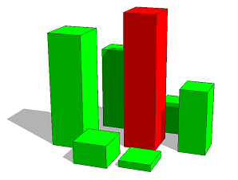

contextCompare function (context query)
Synopsis
float contextCompare(target-selector, label, comparison-selector)
Parameters
- target-selector (keyword)
Target selector for the query:- intra: Checks against labeled shapes in the same shape tree (i.e. from the same inital shape).
- inter: Checks against labeled shapes in other shape trees (i.e. generated by other initial shapes in the neighborhood).
- all: Checks both intra and inter.
- label (string)
The context query is performed only on shapes that match the requested label. Must not be empty. If the label is empty, 0 is returned. - comparison-selector (keyword)
Semantic comparison keyword:- world.northernmost: Ranks shapes by their northernmost bounds starting from the northernmost.
- world.southernmost: Ranks shapes by their southernmost bounds starting from the southernmost.
- world.easternmost: Ranks shapes by their easternmost bounds starting from the easternmost.
- world.westernmost: Ranks shapes by their westernmost bounds starting from the westernmost.
- world.highest: Ranks shapes by their highest bounds starting from the highest.
- world.lowest: Ranks shapes by their lowest bounds starting from the lowest.
- area.largest: Ranks shapes by their areas starting from the largest.
- area.smallest: Ranks shapes by their areas starting from the smallest.
Returns
The rank of the current shape among all shapes that match the given label. The comparison is performed wrt. the given comparison-selector. Ranks are 0-based, i.e. the first position has rank 0. If several shapes share an equal comparision value, the lowest possible rank is returned. If no shape is found matching the specified label, 0 is returned.
A context query that returns the rank of the current shape geometry among other labeled shape geometries according to a specific comparator.
Learn more about important characteristics for context queries in conditions and inter context.
Each label operation does not "label" the current shape but rather creates a new labeled shape that counts as one rank position separately.
Related
Example
 |
Lot --> extrude(rand(10)) label("label") Color
Color -->
case contextCompare(inter, "label", world.highest) == 0 :
color(1,0,0)
case contextCompare(inter, "label", world.lowest) == 0 :
color(0,1,0)
else :
color(0,0,1)
This example applies the Lot rule to a set of initial shapes (inter context). Each lot is extruded by a random value and labeled with "label". The highest geometry is colored in red. In the second case statement, all geometries share the lowest ranking, so the remaining geometries are colored in green. |
Copyright ©2008-2019 Esri R&D Center Zurich. All rights reserved.